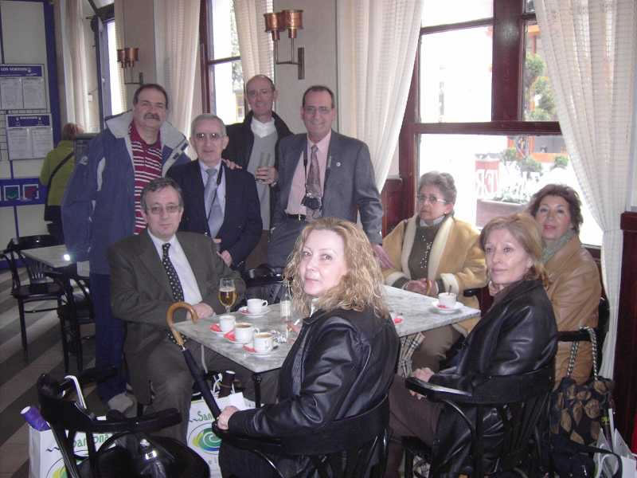

Encuentro en SantoñaEsta foto corresponde al café que nos tomamos tras la visita al Ayuntamiento, aunque era como una prolongación del mismo, pues aquí saludamos a un par de concejales. alguno había estudiado también en el Patronato. |
|
 |